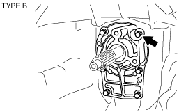

P66M-D [MT WM] ➭ TRANSMISSION/TRANSAXLE ➭ MANUAL TRANSMISSION ➭ MAINSHAFT COMPONENT, COUNTERSHAFT COMPONENT AND TRANSMISSION CASE ASSEMBLY
MAINSHAFT COMPONENT, COUNTERSHAFT COMPONENT AND TRANSMISSION CASE ASSEMBLY
d5e051117040m02
1. Assemble in the order indicated in the table.
|
ghg0517m5004 |
|
1 |
Transmission case |
|---|---|
|
2 |
Countershaft component (See Maindrive Gear Component, Mainshaft Component and Countershaft Component Assembly Note.) |
|
3 |
Mainshaft component (See Maindrive Gear Component, Mainshaft Component and Countershaft Component Assembly Note.) |
|
4 |
Maindrive gear (See Maindrive Gear Component, Mainshaft Component and Countershaft Component Assembly Note.) |
|
5 |
Countershaft front bearing |
|
6 |
Countershaft rear bearing |
|
7 |
Maindrive gear bearing race |
|
8 |
Mainshaft bearing race |
|
9 |
Bearing cover |
|
10 |
Front oil seal (See Front Oil Seal Assembly Note.) |
|
11 |
Bearing shim |
|
12 |
Bearing shim |
|
13 |
Oil baffle |
|
14 |
Front cover (See Maindrive Gear Component, Mainshaft Component and Countershaft Component Assembly Note.) |
|
15 |
Front cover No.2 |
1. Install the oil seal to the front cover using the SST.
|
e5u511bm5043 |
Maindrive Gear Component, Mainshaft Component and Countershaft Component Assembly Note
1. Install the countershaft component.
|
e5u511bm5073 |
2. Install the mainshaft component.
|
e5u511bm5044 |
3. Insert the maindrive gear component from the front cover hole and assemble to the mainshaft component.
|
e5u511bm5045 |
4. Install the countershaft front and center bearing.
|
e5u511bm5046 |
5. Install the maindrive gear bearing race and mainshaft center bearing race.
|
e5u511bm5047 |
6. Install the bearing cover with the arrow pointing to the top of the case.
|
e5u511bm5048 |
Tightening torque:
17.7—26.4 N·m {1.81—2.69 kgf·m, 13.1—19.4 ft·lbf}
7. Select the mainshaft component and countershaft component bearing shims according to the following procedure.
(1) Set the clutch housing side upward and level the transmission case.Caution• Securely assemble the mainshaft, maindrive gear component, and countershaft component so that there is no looseness or play.
(2) Using a depth gauge, measure the maindrive gear bearing outer race height A.+-------------------------------------------------------+ | e5u511bm5049 | +-------------------------------------------------------+
(3) Using a depth gage, measure the maindrive gear bearing retainer depth B.+-------------------------------------------------------+ | e5u511bm5050 | +-------------------------------------------------------+
(4) Calculate and select the correct maindrive gear bearing shim thickness.Formula: C = B - A
C :Dimension between the maindrive gear bearing and bore in the front cover
B: Depth of the maindrive gear bearing bore in the front cover
A: Maindrive gear bearing height
• Refer to the maindrive gear bearing shim selective chart.
Maindrive gear bearing shim selective chart
|
Dimension C (mm {in}) |
Shim thickness (mm {in}) |
|---|---|
|
2.75—2.85 {0.1083—0.1122} |
2.7 {0.106} |
|
2.85—2.95 {0.1122—0.1161} |
2.8 {0.110} |
|
2.95—3.05 {0.1161—0.1201} |
2.9 {0.114} |
|
3.05—3.15 {0.1201—0.1240} |
3.0 {0.118} |
|
3.15—3.25 {0.1240—0.1280} |
3.1 {0.122} |
|
3.25—3.35 {0.1280—0.1319} |
3.2 {0.126} |
|
3.35—3.45 {0.1319—0.1358} |
3.3 {0.130} |
|
3.45—3.55 {0.1358—0.1398} |
3.4 {0.134} |
|
3.55—3.65 {0.1398—0.1437} |
3.5 {0.138} |
|
3.65—3.75 {0.1437—0.1476} |
3.6 {0.142} |
|
3.75—3.85 {0.1476—0.1516} |
3.7 {0.147} |
|
3.85—3.95 {0.1516—0.1555} |
3.8 {0.150} |
|
3.95—4.05 {0.1555—0.1594} |
3.9 {0.154} |
|
4.05—4.15 {0.1594—0.1634} |
4.0 {0.157} |
|
4.15—4.25 {0.1634—0.1673} |
4.1 {0.161} |
Maindrive gear shaft total end play
0.05—0.15 mm {0.0020—0.0059 in}
(5) Using a depth gauge, measure the countershaft front bearing depth D.+-------------------------------------------------------+ | e5u511bm5052 | +-------------------------------------------------------+
Note• The countershaft bearing is located below the contact surface of the case and front cover.
(6) Using a depth gauge, measure the countershaft front bearing retainer depth E.+-------------------------------------------------------+ | e5u511bm5053 | +-------------------------------------------------------+
(7) Calculate and select the correct countershaft front bearing shim thickness.Formula: F = E + D
F :Dimension between the countershaft front bearing and bore in the front cover
E: Depth of the countershaft front bearing bore in the front cover
D: Countershaft front bearing depth
• Refer to the countershaft front bearing shim selective chart.
Countershaft front bearing shim selective chart
|
Dimension F (mm {in}) |
Shim thickness (mm {in}) |
|---|---|
|
2.45—2.55 {0.0965—0.1004} |
2.3 {0.091} |
|
2.55—2.65 {0.1004—0.1043} |
2.4 {0.094} |
|
2.65—2.75 {0.1043—0.1083} |
2.5 {0.098} |
|
2.75—2.85 {0.1083—0.1122} |
2.6 {0.102} |
|
2.85—2.95 {0.1122—0.1161} |
2.7 {0.106} |
|
2.95—3.05 {0.1161—0.1201} |
2.8 {0.110} |
|
3.05—3.15 {0.1201—0.1240} |
2.9 {0.114} |
|
3.15—3.25 {0.1240—0.1280} |
3.0 {0.118} |
|
3.25—3.35 {0.1280—0.1319} |
3.1 {0.122} |
Countershaft total end play
0.15—0.25 mm {0.0059—0.0098 in}
8. Position the maindrive gear bearing shim, oil baffle, and the countershaft bearing shim onto the front cover.
Note• If necessary, apply a light coat of petroleum jelly to the shims and oil baffle.
9. Apply sealant to the contact surfaces of the transmission case and front cover as shown in the figure.
|
e5u511bm5078 |
10. Install the front cover to the transmission case.
|
|
 ghg0517m5005
ghg0517m5005|
 ghg0517m5006 |
Tightening torque:
19—25 N·m {2.0—2.5 kgf·m, 15—18 ft·lbf}
Note• To prevent damage to the oil seal lip during assembly, tape maindrive gear shaft splines.